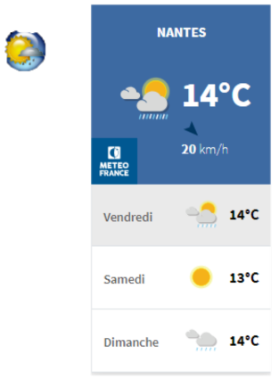
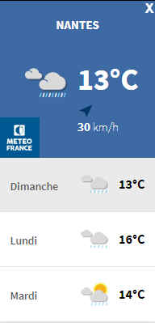
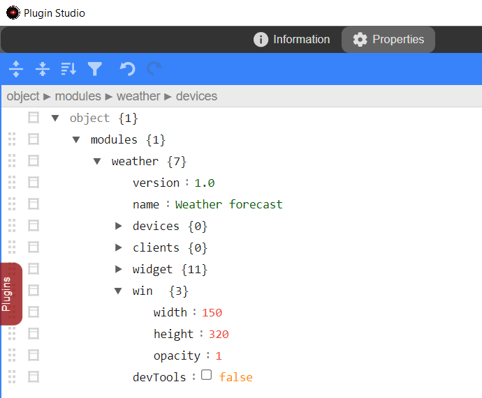

Create a window
Weather forecast plugin (part 2)
This example is the part 2 of a complet plugin in three parts which ultimately displays the weather forecast in a window.
we'll add a window to the A.V.A.T.A.R interface built with the Electron framework to display the weather forecast.
Developing a window for a plugin is made easy with A.V.A.T.A.R. You don't need to build a complete Electron application, just use the API methods.
Warning
Note that the part 1 Create a widget button must be completed before this step.
Understanding files
To build a window, several files are required:
Main process file
The “main process” file is the plugin's node.js script file (on the web server side).
All window manipulation actions, such as window creation, are performed in this file.
Preload file
The “preload” file is a gateway between the “main process” and the “renderer process” (on the Chromium client side).
This file defines the “gateway methods” that will send or receive information between the “main process” and the “renderer process” via this communication process.
Renderer process files
Important
Electron rendering processes run in a sandbox.
They behave in the same way as a normal Chrome rendering process. A sandboxed renderer will therefore not have an initialized Node.js environment. Simply put, you can't use node.js in a rendering process.
The sandbox limits the damage that malicious code can cause by restricting access to most system resources, and can only freely use CPU cycles and memory.
The renderer process includes 3 main files:
javascript file
This file receives or sends all communications from the main process (via preload) and can also perform all javascript actions on the web interface (on the Chromium client side).
Note
There's no need for a javascript file if there's no communication between the “main process” and the “renderer process”, nor any javascript functions for the web page.
HTML file
The “html” file is the rendering file for the web page. The javascript file is called in this file.
CSS
The “css” file is the layout file for the web page. It is called in the “html” file.
To summarize
| Type | SubType | language | mandatory | Format | Comment |
|---|---|---|---|---|---|
| Main process | node.js >= ES6 |
yes | <plugin>.js | The plugin script | |
| preload | node.js CommonJS |
no | <plugin>-preload.js | The gateway file. Mandatory only if information communication is required between the Main proccess and the Renderer process. |
|
| Renderer | javascript | >= ES6 | no | <plugin>-renderer.js | Mandatory only if information communication is required with the Main proccess |
| Renderer | html | html | yes | <plugin>.html | The web page rendering file |
| Renderer | css | css | no | <plugin>.css | The web page layout file |
Create plugin files
The preload file
- Open a terminal and navigate to the plugin folder
cd <A.V.A..T.A.R>/resources/app/cores/plugin/weather - Create a weather-preload.js file
-
Copy the preload file template below into the file
weather-preload.jsconst { contextBridge, ipcRenderer } = require('electron') contextBridge.exposeInMainWorld('electronAPI', { })
The HTML file
- In the plugin folder, create a weather.html file
-
Copy the html template below into the file
Note: Imports of weather.css and weather-renderer.js are included.
weather.html<!DOCTYPE html> <html> <head> <meta charset="UTF-8"> <meta http-equiv="Content-Security-Policy" content="default-src 'self'; script-src 'self'; script-src-elem 'self'; style-src 'self' 'unsafe-inline'"> <meta http-equiv="X-Content-Security-Policy" content="default-src 'self'; script-src 'self'"/> <link href="./weather.css" rel="stylesheet" type="text/css" /> </head> <body> <script src="./weather-renderer.js"></script> </body> </html>
The javacript file
- In the plugin folder, create a weather-renderer.js file
- For the moment, the file is empty
The CSS file
- In the plugin folder, create a weather.css file
-
Copy the css file template below into the file
weather.cssbody, html { width: 100%; height: 100%; overflow: hidden; margin: 0; -webkit-app-region: drag; }
Add the window
In the plugin script,
-
Add a WeatherWindow global variable
weather.js// Private let WeatherWindow; // weather forecast window let currentwidgetState; let periphInfo = []; // devices table let Locale; //language pak -
Add button actions
weather.jsexport async function widgetAction (even) { // Save current state currentwidgetState = even.value.action === 'On' ? true : false; // If 'On', show window if (!WeatherWindow && even.value.action === 'On') return openWeatherWindow(); // If 'Off', destroy window if (WeatherWindow && even.value.action === 'Off') WeatherWindow.destroy(); } -
Add the following method to the end of the file:
weather.js 1 2 3 4 5 6 7 8 9 10 11 12 13 14 15 16 17 18 19 20 21 22 23 24 25 26 27 28 29 30 31 32
const openWeatherWindow = async () => { if (WeatherWindow) return WeatherWindow.show(); let style = { parent: Avatar.Interface.mainWindow(), frame: false, movable: true, resizable: false, minimizable: false, alwaysOnTop: false, show: false, width: 150, height: 320, opacity : 1, icon: path.resolve(__dirname, 'assets', 'images', 'weather.png'), webPreferences: { preload: path.resolve(__dirname, 'weather-preload.js') }, title: "Weather forecast" } WeatherWindow = await Avatar.Interface.BrowserWindow(style, path.resolve(__dirname, 'weather.html'), false); WeatherWindow.once('ready-to-show', () => { WeatherWindow.show(); }) WeatherWindow.on('closed', () => { WeatherWindow = null; }) } -
Restart A.V.A.T.A.R
- Test the button widget
- You can also try moving the window using drag&drop.
Explanations
Some explanations of the methods and objects used to create the window in the openWeatherWindow method
Avatar.Interface.mainWindow()
Returns the A.V.A.T.A.R main window.
Used to set the A.V.A.T.A.R main interface as parent window of the new window
let style = {
parent: Avatar.Interface.mainWindow(),
...
class BrowserWindow #
Create and control browser windows.
Important
This class is controled by A.V.A.T.A.R. You have to use the Avatar.Interface.BrowserWindow() to create a new browser window.
- line 23: Create a new browser window
WeatherWindow = await Avatar.Interface.BrowserWindow(style, path.resolve(__dirname, 'weather.html'), false);
win.show() event method #
Shows and gives focus to the window.
-
line 3: Creates window only if the WeatherWindow variable is undefined.
if (WeatherWindow) return WeatherWindow.show(); -
line 26: Show the window when the event
ready-to-showis emittedWeatherWindow.once('ready-to-show', () => { WeatherWindow.show(); })
Event methods
Event: 'ready-to-show' #
Emitted when the web page has been rendered (while not being shown) and window can be displayed without a visual flash.
WeatherWindow.once('ready-to-show', () => {
WeatherWindow.show();
})
Event: 'closed' #
Emitted when the window is closed. After you have received this event you should remove the reference to the window and avoid using it any more.
WeatherWindow.on('closed', () => {
WeatherWindow = null;
})
window position
Save
The window position is saved when A.V.A.T.A.R is restarted or exited.
-
Add
fs-extrato the importsimport * as path from 'node:path'; import fs from 'fs-extra'; import * as url from 'url'; -
Add a backup test to the onClose() method as follows
export async function onClose (widgets) { // Save widget position if (Config.modules.weather.widget.display === true) { await Widget.initVar(widgetFolder, widgetImgFolder, null, Config.modules.weather); if (widgets) await Widget.saveWidgets(widgets); } // Save meteo forecast position if (WeatherWindow) { // The window is displayed // Get window instance position let pos = WeatherWindow.getPosition(); // Writes position and the window state (displayed or closed) fs.writeJsonSync(path.resolve(__dirname, 'assets', 'style.json'), { x: pos[0], y: pos[1], start: true, }); } else { // The window is closed // If the backup file exists then keeps the position first let prop = {}; if (fs.existsSync(path.resolve(__dirname, 'assets', 'style.json'))) { prop = fs.readJsonSync(path.resolve(__dirname, 'assets', 'style.json'), { throws: false }); } // Writes the window state (closed) prop.start = false; fs.writeJsonSync(path.resolve(__dirname, 'assets', 'style.json'), prop); } }
restore
The window position is restored when the window is created.
-
Add the position feedback to the openWeatherWindow() method as follows
weather.jsconst openWeatherWindow = async () => { if (WeatherWindow) return WeatherWindow.show(); let style = { parent: Avatar.Interface.mainWindow(), frame: false, movable: true, resizable: false, minimizable: false, alwaysOnTop: false, show: false, width: 150, height: 320, opacity : 1, icon: path.resolve(__dirname, 'assets', 'images', 'weather.png'), webPreferences: { preload: path.resolve(__dirname, 'weather-preload.js') }, title: "Weather forecast" }; if (fs.existsSync(path.resolve(__dirname, 'assets', 'style.json'))) { let prop = fs.readJsonSync(path.resolve(__dirname, 'assets', 'style.json'), { throws: false }); if (prop) { style.x = prop.x; style.y = prop.y; } } WeatherWindow = await Avatar.Interface.BrowserWindow(style, path.resolve(__dirname, 'weather.html'), false); WeatherWindow.once('ready-to-show', () => { WeatherWindow.show(); }) WeatherWindow.on('closed', () => { WeatherWindow = null; }) }
Restore window state
The window state is restored when A.V.A.T.A.R has finished displaying widgets.
-
In the readyToShow() method, add a status display as follows
weather.js2. Reset the currentwidgetState variable toexport async function readyToShow () { // If a backup file exists if (fs.existsSync(path.resolve(__dirname, 'assets', 'style.json'))) { let prop = fs.readJsonSync(path.resolve(__dirname, 'assets', 'style.json'), { throws: false }); // Set currentwidgetState global variable currentwidgetState = prop.start; // currentwidgetState = true : creates and shows new window if (currentwidgetState) openWeatherWindow(); } else // not displayed if the window is closed currentwidgetState = false; // Refreshs information of the button widget regarding window state ('On' or 'Off' image) Avatar.Interface.refreshWidgetInfo({plugin: 'weather', id: "808221"}); }falsein theclosedevent, as shown belowweather.jsWeatherWindow.on('closed', () => { // not displayed if the window is closed currentwidgetState = false; WeatherWindow = null; }) -
Restart A.V.A.T.A.R
- Test save/restore window position and status
Add weather forecast
You can retrieve a city weather widget from several sites. Be careful which site you choose, as some sites collect a lot of connection information (like weatherwidget.org), while others are listed as very dangerous (like widget-meteo.com). The easiest way is to use a secure site (such as météo France, which also provides weather information for all countries).
Warning
Remember also the creation of the html file. This file, created by rendering in the sandbox, limits the damage that malicious code can cause, but also requires validation of external links. For some sites that execute javascript code, you'll need to authorize the site in the security policy.
- Open a browser and connect to the météo France website or the website of your choice.
- Get the html code
-
Copy it into the html file as follows
weather.html4. Change the size of the iframe element to width=“100%” and height=“100%”.<!DOCTYPE html> <html> <head> <meta charset="UTF-8"> <meta http-equiv="Content-Security-Policy" content="script-src 'self'; script-src-elem 'self'; style-src 'self' 'unsafe-inline'"> <meta http-equiv="X-Content-Security-Policy" content="default-src 'self'; script-src 'self'"/> <link href="./weather.css" rel="stylesheet" type="text/css" /> </head> <body> <iframe id="widget_autocomplete_preview" width="150" height="300" frameborder="0" src="https://meteofrance.com/widget/prevision/441090##3D6AA2" title="Prévisions Nantes par Météo-France"> </iframe> <script src="./weather-renderer.js"></script> </body> </html>weather.html5. Authorize the site in the security policy by adding it to the<iframe id="widget_autocomplete_preview" width="100%" height="100%" frameborder="0" src="https://meteofrance.com/widget/prevision/441090##3D6AA2" title="Prévisions Nantes par Météo-France"> </iframe>default-srcfont as followsweather.html6. Restart A.V.A.T.A.R<meta http-equiv="Content-Security-Policy" content="default-src 'self' https://meteofrance.com; script-src 'self'; script-src-elem 'self'; style-src 'self' 'unsafe-inline'">
Tip
If you notice a problem with window size, you can adjust it in the script and the style.width and style.height objects.
Transfer information between Main and Renderer processes
We could stop here, since the plugin is already functional, but for the purposes of this example, we're going to transfer information between the main process and the renderer process.
There are several types of Inter-Process Communication (IPC):
Type 1: Main process to renderer
Type 2: Renderer to main process (unidirectional)
Type 3: Renderer to main process (bidirectional)
Tip
To familiarize yourself with these concepts, you can read Electron's documentation on Inter-process communication.
In our example, we'll first use type 1 to send a message from the main process to the renderer to execute a function, then type 3 for the renderer to request information from the main process and receive a response, and finally type 2 for the renderer to send an execution command to close the window to the main process.
Type 1: Send a message to the renderer
Sending a message to the rendering engine is done via its WebContents instance. This WebContents instance contains a send method that can be used.
-
Add the
sendmethodcontents.send(channel, ...args)
- channel string
- ...args any[]
Sends an asynchronous message and a number of arguments to the renderer process via channel
Warning
NOTE: Sending non-standard Javascript types such as DOM objects or special objects will trigger an exception.
For our example, we need to tell the renderer to execute an update action on a
labelelement after its complete initialization (so that all DOM elements are accessible). The way to do this is to place thesendmethod in theready-to-showevent.weather.jsconst openWeatherWindow = async () => { if (WeatherWindow) return WeatherWindow.show(); let style = { parent: Avatar.Interface.mainWindow(), frame: false, movable: true, resizable: false, minimizable: false, alwaysOnTop: false, show: false, width: 150, height: 320, opacity : 1, icon: path.resolve(__dirname, 'assets', 'images', 'weather.png'), webPreferences: { preload: path.resolve(__dirname, 'weather-preload.js') }, title: "Weather forecast" }; if (fs.existsSync(path.resolve(__dirname, 'assets', 'style.json'))) { let prop = fs.readJsonSync(path.resolve(__dirname, 'assets', 'style.json'), { throws: false }); if (prop) { style.x = prop.x; style.y = prop.y; } } WeatherWindow = await Avatar.Interface.BrowserWindow(style, path.resolve(__dirname, 'weather.html'), false); WeatherWindow.once('ready-to-show', () => { WeatherWindow.show(); WeatherWindow.webContents.send('onInit-weather'); }) WeatherWindow.on('closed', () => { // not displayed if the window is closed currentwidgetState = false; WeatherWindow = null; }) } -
Exposure of
ipcRenderer.onby adding it to the preload scriptipcRenderer.on(channel, listener)
- channel string
- listener Function
- event IpcRendererEvent
- ...args any[]
Listen on channel and listener will be called as follows: listener(event, args...) when a new message is received.
weather-preload.jsconst { contextBridge, ipcRenderer } = require('electron') contextBridge.exposeInMainWorld('electronAPI', { onInitWeather: (callback) => ipcRenderer.on('onInit-weather', (_event, value) => callback(value)) })After loading the preload script, your renderer process will have access to the listen function
window.electronAPI.onInitWeather(). -
Add the listening function to the rendering engine
weather-renderer.js// Update element function async function setElementLabel() { } window.electronAPI.onInitWeather( _event => { // Update element on init setElementLabel(); })
To summarize
We sent a message to the renderer using the send method via the ipcRenderer.on preload script, and the renderer receives it via the onInitWeather listen function.
Now we need to request the value of a label element. To do this, we'll establish a type 3 communication: from the renderer to the main process (bidirectional).
Type 3: Renderer requests information from the main process and waits for the response (bidirectional)
Bidirectional communication is the calling of a main process module from the renderer process code with the expectation of a result. This can be done using ipcRenderer.invoke in the preload script paired with ipcMain.handle in the main process.
-
Add a listener module
ipcMain.handle(channel, listener)
- channel string
- listener Function
- event IpcMainInvokeEvent
- ...args any[]
Adds a listening module to channel in the main process. This handler is called whenever the rendering process calls
ipcRenderer.invoke(channel, ...args).If listener returns a Promise, the final result of the promise will be returned in response to the remote caller. Otherwise, the listener's return value will be used as the response value.
Warning
- The IPC main is controled by A.V.A.T.A.R. You have to use the Avatar.Interface.ipcMain() for returning the A.V.A.T.A.R ipcMain.
- A channel handle can only be declared once. It must obligatorily be removed by an ipcMain.removeHandler before being declared again.
- Add and remove the handler in the openWeatherWindow method as follows
weather.jsconst openWeatherWindow = async () => { if (WeatherWindow) return WeatherWindow.show(); let style = { parent: Avatar.Interface.mainWindow(), frame: false, movable: true, resizable: false, minimizable: false, alwaysOnTop: false, show: false, width: 150, height: 320, opacity : 1, icon: path.resolve(__dirname, 'assets', 'images', 'weather.png'), webPreferences: { preload: path.resolve(__dirname, 'weather-preload.js') }, title: "Weather forecast" }; if (fs.existsSync(path.resolve(__dirname, 'assets', 'style.json'))) { let prop = fs.readJsonSync(path.resolve(__dirname, 'assets', 'style.json'), { throws: false }); if (prop) { style.x = prop.x; style.y = prop.y; } } WeatherWindow = await Avatar.Interface.BrowserWindow(style, path.resolve(__dirname, 'weather.html'), false); WeatherWindow.once('ready-to-show', () => { WeatherWindow.show(); WeatherWindow.webContents.send('onInit-weather'); }) // returns the localized message defined in arg Avatar.Interface.ipcMain().handle('weather-msg', async (_event, arg) => {return Locale.get(arg)}); WeatherWindow.on('closed', () => { // not displayed if the window is closed currentwidgetState = false; // Removes the `weather-msg` handler when the window is closed Avatar.Interface.ipcMain().removeHandler('weather-msg'); WeatherWindow = null; }) } -
Exposing
ipcRenderer.invokeby adding it to the preload scriptipcRenderer.invoke(channel, ...args)
- channel string
- ...args any[]
Returns a Promise
- which resolves with the response from the main process. Sends a message to the main process via channel and waits for an asynchronous result.
weather-preload.jsconst { contextBridge, ipcRenderer } = require('electron') contextBridge.exposeInMainWorld('electronAPI', { onInitWeather: (callback) => ipcRenderer.on('onInit-weather', (_event, value) => callback(value)), getMsg: (value) => ipcRenderer.invoke('weather-msg', value) })The
weather-msglistening module is called whenever the renderer'swindow.electronAPI.getMsg()function callsipcRenderer.invoke(). -
Add the getMsg() function to the renderer process
weather-renderer.jsasync function Lget (target, ...args) { if (args) { target = [target]; args.forEach(arg => { target.push(arg); }) } return await window.electronAPI.getMsg(target); } async function setElementLabel() { document.getElementById('quit').innerHTML = await Lget("message.quit"); } window.electronAPI.onInitWeather( _event => { setElementLabel(); }) -
Localize the message
- Modify the weather/locales/en.pak file as follows
NOTE: See <lang>.get() for futher information.
en.pak{ "message": { "quit":"X" } } -
Add a
labelelement to the html fileweather.html6. Add a style to the css file<!DOCTYPE html> <html> <head> <meta charset="UTF-8"> <meta http-equiv="Content-Security-Policy" content="script-src 'self'; script-src-elem 'self'; style-src 'self' 'unsafe-inline'"> <meta http-equiv="X-Content-Security-Policy" content="default-src 'self'; script-src 'self'"/> <link href="./weather.css" rel="stylesheet" type="text/css" /> </head> <body> <iframe id="widget_autocomplete_preview" width="150" height="300" frameborder="0" src="https://meteofrance.com/widget/prevision/441090##3D6AA2" title="Prévisions Nantes par Météo-France"> </iframe> <label id="quit" class="quit"></label> <script src="./weather-renderer.js"></script> </body> </html>weather.cssbody, html { width: 100%; height: 100%; overflow: hidden; margin: 0; -webkit-app-region: drag; } .quit{ position: fixed; top: 0px; right: 2px; -webkit-app-region:no-drag; font: 13px helvetica neue, helvetica, arial, sans-serif; font-weight: bold; color: rgb(255, 255, 255); z-index: 2; } .quit:hover { color: rgb(247, 5, 5); cursor: pointer; } -
Restart A.V.A.T.A.R and check the addition of the X label element in the top right-hand corner.

Type 2: Renderer sends information to the main process (unidirectional)
One-way communication is the calling of a main process module from the rendering process code. This can be done using ipcRenderer.send in the preload script paired with ipcMain.on in the main process.
-
Add a listening module
ipcMain.on(channel, listener)
- channel string
- listener Function
- event IpcMainEvent
- ...args any[]
Listen on channel and listener will be called as follows: listener(event, args...) when a new message is received.
Warning
- The IPC main is controled by A.V.A.T.A.R. You have to use the Avatar.Interface.ipcMain() for returning the A.V.A.T.A.R ipcMain.
- A Listener for the channel can only be declared once. It must obligatorily be removed by a ipcMain.removeAllListeners before being declared again.
For our example, we need to tell the main process to close the window by clicking on the X label element.
NOTE: This closure is performed by the instance method win.destroy()
- Add the listening module and a remove in the openWeatherWindow method as follows
weather.jsconst openWeatherWindow = async () => { if (WeatherWindow) return WeatherWindow.show(); let style = { parent: Avatar.Interface.mainWindow(), frame: false, movable: true, resizable: false, minimizable: false, alwaysOnTop: false, show: false, width: 150, height: 320, opacity : 1, icon: path.resolve(__dirname, 'assets', 'images', 'weather.png'), webPreferences: { preload: path.resolve(__dirname, 'weather-preload.js') }, title: "Weather forecast" }; if (fs.existsSync(path.resolve(__dirname, 'assets', 'style.json'))) { let prop = fs.readJsonSync(path.resolve(__dirname, 'assets', 'style.json'), { throws: false }); if (prop) { style.x = prop.x; style.y = prop.y; } } WeatherWindow = await Avatar.Interface.BrowserWindow(style, path.resolve(__dirname, 'weather.html'), false); WeatherWindow.once('ready-to-show', () => { WeatherWindow.show(); WeatherWindow.webContents.send('onInit-weather'); }) // Destroys window by a click on the 'X' label Avatar.Interface.ipcMain().one('weather-quit', () => { // Closed window WeatherWindow.destroy(); // refresh widget button on window closed Avatar.Interface.refreshWidgetInfo({plugin: 'weather', id: "808221"}); }); // returns the localized message defined in arg Avatar.Interface.ipcMain().handle('weather-msg', async (_event, arg) => {return Locale.get(arg)}); WeatherWindow.on('closed', () => { // not displayed if the window is closed currentwidgetState = false; // Removes the `weather-msg` handler when the window is closed Avatar.Interface.ipcMain().removeHandler('weather-msg'); // Removes the `weather-quit` listener when the window is closed Avatar.Interface.ipcMain().removeAllListeners('weather-quit'); WeatherWindow = null; }) } -
Exposure of
ipcRenderer.sendby adding it to the preload scriptipcRenderer.send(channel, ...args)
- channel string
- ...args any[]
Sends an asynchronous message and arguments to the main process via channel.
weather-preload.jsconst { contextBridge, ipcRenderer } = require('electron') contextBridge.exposeInMainWorld('electronAPI', { onInitWeather: (callback) => ipcRenderer.on('onInit-weather', (_event, value) => callback(value)), getMsg: (value) => ipcRenderer.invoke('weather-msg', value), quit: () => ipcRenderer.send('weather-quit') })The
weather-quitlistener is called whenever thewindow.electronAPI.quit()function of the rendering process callsipcRenderer.send(). -
Add the
window.electronAPI.quit()function to the renderer processweather-renderer.jswindow.onbeforeunload = async (e) => { e.returnValue = false; // Calls window closure in the main process window.electronAPI.quit(); } // A click on the label calls the 'beforeunload' event document.getElementById("quit").addEventListener("click", async (event) => { window.dispatchEvent(new Event ('beforeunload')); }) async function Lget (target, ...args) { if (args) { target = [target]; args.forEach(arg => { target.push(arg); }) } return await window.electronAPI.getMsg(target); } async function setElementLabel() { document.getElementById('quit').innerHTML = await Lget("message.quit"); } window.electronAPI.onInitWeather( _event => { setElementLabel(); }) -
Restart A.V.A.T.A.R and check that the window is closed by clicking on the X label element.
Finalization
A few small additions to finalize the plugin, for example :
- Window size are parameters
- Easily open the Chromium console
1: Window size in parameters
- Add plugin properties with Plugin studio
win = {
width: 150,
height: 320,
opacity: 1
}
devTools = false

2: Modify the style object to include the parameters
let style = {
parent: Avatar.Interface.mainWindow(),
frame: false,
movable: true,
resizable: false,
minimizable: false,
alwaysOnTop: false,
show: false,
width: Config.modules.weather.win.width,
height: Config.modules.weather.win.height,
opacity : Config.modules.weather.win.opacity,
icon: path.resolve(__dirname, 'assets', 'images', 'weather.png'),
webPreferences: {
preload: path.resolve(__dirname, 'weather-preload.js')
},
title: "Weather forecast"
};
......
3: Add Chromium console opening
WeatherWindow.once('ready-to-show', () => {
WeatherWindow.show();
WeatherWindow.webContents.send('onInit-weather');
// Displays the Chromium console if the devTools parameter is true
if (Config.modules.weather.devTools) WeatherWindow.webContents.openDevTools();
})
- Restart A.V.A.T.A.R
In the following example, we will transfer this plugin to a client
Create a button button (Part 1)Transfer the plugin to a client (Part 3)